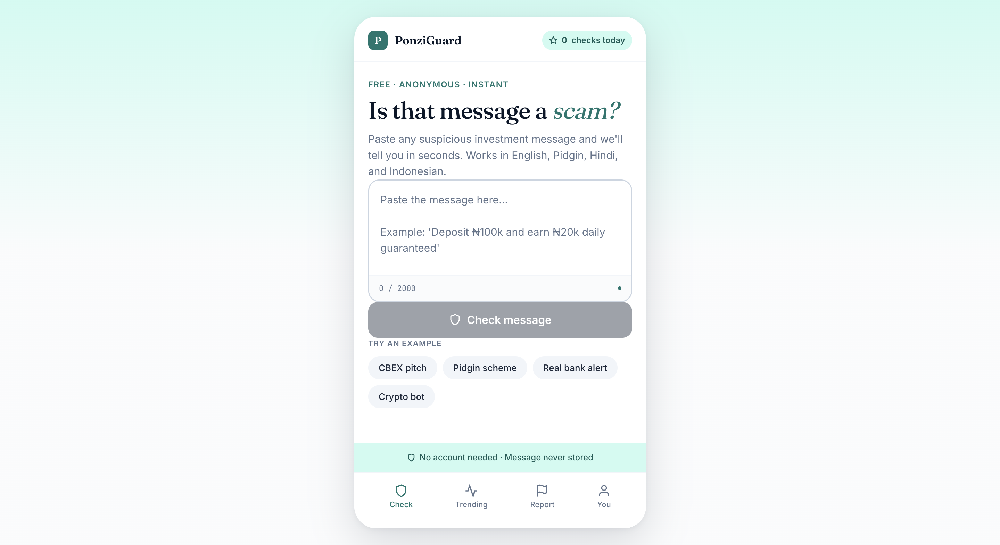
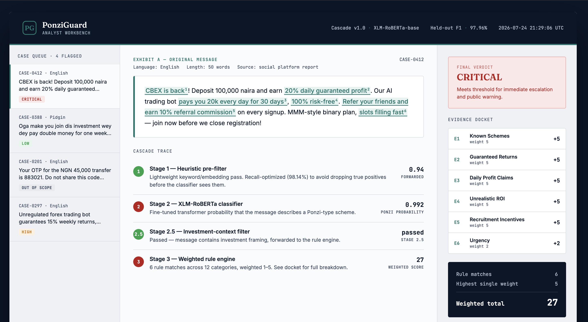
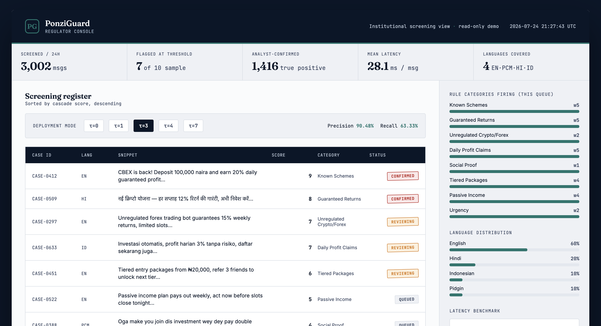

What Problem Did I Solve?
Ponzi schemes recruit through social media constantly CBEX, MMM, Racksterli, and dozens of copycats promise guaranteed daily returns and spread through referral chains before regulators can respond. Existing fraud filters are mostly English-only, keyword-based, and static, so they miss the same scheme the moment it's rephrased in Pidgin, Hindi, or Indonesian, or dressed up as a "crypto trading bot."
The Core Problem
A detector needed to be accurate enough to trust, fast enough to run at social-media scale, generalizable across languages regulators actually see in the field, and explainable enough that a non-technical investigator could understand exactly why a message was flagged — not just trust a black-box score.
What I Built
PonziGuard is a four-stage cascade rather than a single model. A lightweight heuristic pre-filter (Stage 1) casts a wide, recall-optimized net. A fine-tuned XLM-RoBERTa-base classifier (Stage 2) does the real semantic classification. An investment-context filter (Stage 2.5) prevents the system from flagging phishing or lottery scams as Ponzi schemes specifically. And a weighted, 12-category rule engine (Stage 3) turns the final decision into something a regulator can audit line by line, with five deployment thresholds tuned for different use cases — from exhaustive regulator screening to court-grade certainty.
Three Interfaces, Three Audiences
The same cascade means different things depending on who's using it. I built three linked front ends to show that: a quick consumer check, an analyst's single-case deep dive, and a regulator's caseload-wide screening view. These are UI/UX prototypes built around the model's actual reported outputs and metrics — not wired up to a live inference backend — designed to show how one detection system could serve three very different audiences.

📱 Consumer Check
Paste a message you received, get a plain-language verdict in seconds. Built mobile-first, no jargon.
Open consumer view →
🔎 Analyst Workbench
A single flagged case annotated line by line every rule match tied to a live-tallying evidence docket.
Open analyst view →
🏛️ Regulator Console
Caseload-wide screening with a live threshold switcher, showing the real precision/recall trade-off at each cutoff.
Open regulator view →How It Works
The classifier is fine-tuned XLM-RoBERTa-base over a combined dataset of 15,010 messages drawn from Telegram spam/ham, phishing-email, and SMS-spam sources, plus 401 hand-crafted synthetic Ponzi examples covering the patterns public datasets don't. Training ran three epochs with early stopping, on CPU only no GPU access, which shaped every architecture decision.
XLM-RoBERTa-base
Fine-tuned multilingual transformer, the core Stage 2 classifier
Weighted Rule Engine
12 categories, weights 1–5, gives every verdict an auditable trail
Streamlit
Loads the cascade directly and serves the live interactive demo
PyTorch + scikit-learn
Model training, evaluation, and the Stage 1/3 heuristic and rule layers
# Fine-tuning configuration
epochs = 3 # early stopping caught overfitting at epoch 2
batch_size = 16
learning_rate = 2e-5
weight_decay = 0.01
optimizer = "AdamW" # linear LR schedule
split = "70 / 10 / 20, stratified"
Results & Honest Limitations
Held-Out vs. Curated Performance
On a held-out test set of 3,002 messages, the fine-tuned classifier reaches 97.96% F1 (97.86% precision, 98.06% recall) up from a 26.67% zero-shot baseline. On a harder, hand-curated 60-message multilingual set designed to stress-test generalization, the full cascade drops to a more honest 74.51% F1 at 90.48% precision. Both numbers are reported, not just the flattering one.
The system also holds up on latency: 28.14ms mean end-to-end on CPU, with a 95th-percentile of 64.45ms comfortably under the 100ms target for real-time screening, even without GPU acceleration.
What I Learned
- Generalization has a real gap, and it's worth naming: per-language F1 on the curated set ranges from 92.31% on Indonesian down to 28.57% on Nigerian Pidgin. The classifier itself hits 100% recall on Pidgin the rule engine is the bottleneck, because its 12 categories are English-anchored. Diagnosing which stage was actually failing, rather than blaming the whole pipeline, was the most useful debugging lesson of the project.
- A high accuracy number means nothing without the honest comparison: reporting the curated-set F1 (74.51%) alongside the held-out F1 (97.96%) was more convincing in my defence than either number alone would have been.
- Explainability is a design constraint, not a bonus feature: building the weighted rule engine as a parallel, auditable layer rather than trying to explain the transformer's internals — was what made the system usable for a non-technical regulator.
- CPU constraints force better architecture decisions: without GPU access, every choice model size, cascade ordering, batch size had to earn its latency cost. The four-transformer ensemble I'd have liked to try would need roughly $60–80K of A100 compute; the cascade was the realistic path.